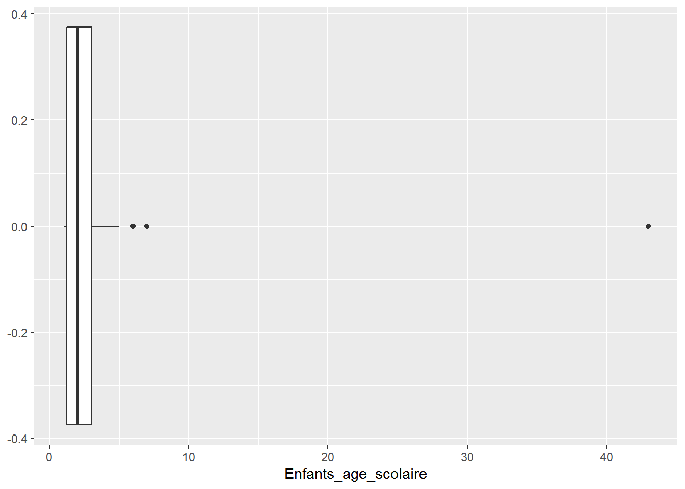
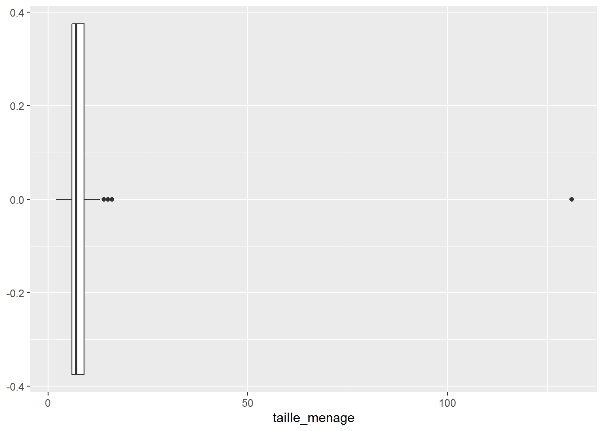
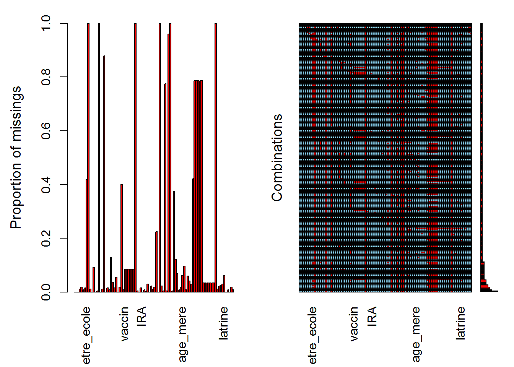
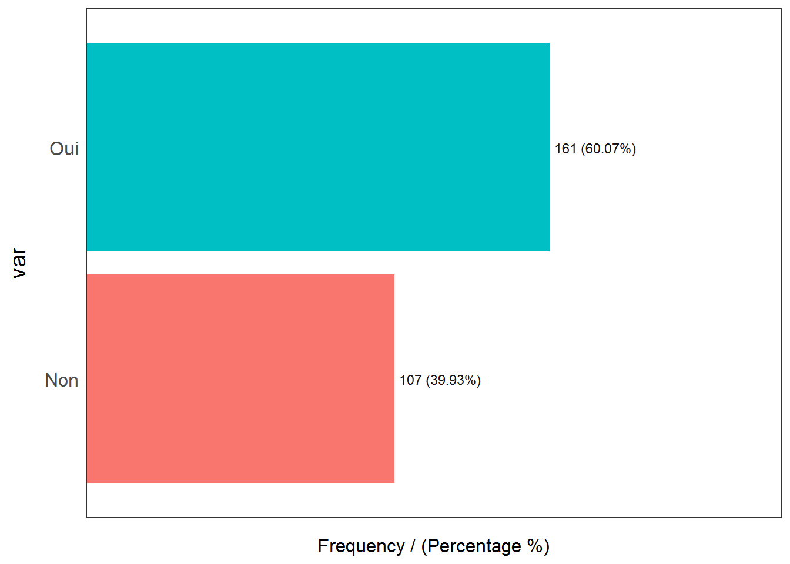
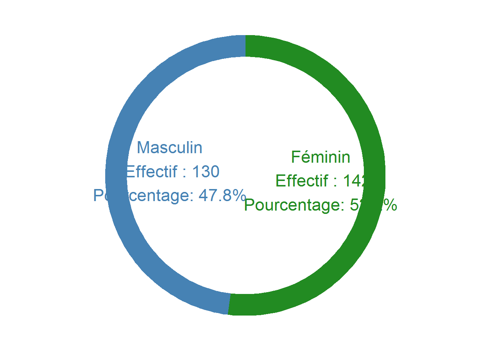

Chapter 4 Caractéristiques des parents
df$statut_matrimonial %>% summarytools::freq() %>% kable()| Freq | % Valid | % Valid Cum. | % Total | % Total Cum. | |
|---|---|---|---|---|---|
| Célibataire | 4 | 1.486989 | 1.486989 | 1.470588 | 1.470588 |
| Marié | 222 | 82.527881 | 84.014870 | 81.617647 | 83.088235 |
| Divorcé | 5 | 1.858736 | 85.873606 | 1.838235 | 84.926471 |
| veuve | 23 | 8.550186 | 94.423792 | 8.455882 | 93.382353 |
| séparé | 15 | 5.576208 | 100.000000 | 5.514706 | 98.897059 |
| <NA> | 3 | NA | NA | 1.102941 | 100.000000 |
| Total | 272 | 100.000000 | 100.000000 | 100.000000 | 100.000000 |
81% des parents des enfants sont des mariés, 8,5% des des veuves, 5,5% sont des séparés et 1,8% des divorcé. On comte 4 mères célibataires, soit 1,5% des femmes ayant des enfants en âge scolaire.
df %>% select(taille_menage,Enfants_age_scolaire) %>% descr(headings = F,transpose = T,stats="common") %>% kable(digits = 2)| Mean | Std.Dev | Min | Median | Max | N.Valid | Pct.Valid | |
|---|---|---|---|---|---|---|---|
| Enfants_age_scolaire | 2.59 | 2.77 | 1 | 2 | 43 | 270 | 99.26 |
| taille_menage | 8.13 | 7.91 | 2 | 7 | 131 | 267 | 98.16 |
df %>% ggplot()+ aes(x=Enfants_age_scolaire)+
geom_boxplot()## Warning: Removed 2 rows containing non-finite values (stat_boxplot).
df %>% ggplot()+ aes(x=taille_menage)+
geom_boxplot()## Warning: Removed 5 rows containing non-finite values (stat_boxplot).
Tail_men_imp <- imputate_outlier(df,taille_menage,method = "median")
Enfants_age_scolaire_imp <- imputate_outlier(df,Enfants_age_scolaire,method = "median")
df <- df %>% cbind(Tail_men_imp,Enfants_age_scolaire_imp)
df %>% select(Tail_men_imp,Enfants_age_scolaire_imp) %>% descr(headings = F,transpose = T,stats="common") %>% kable(digits = 2)| Mean | Std.Dev | Min | Median | Max | N.Valid | Pct.Valid | |
|---|---|---|---|---|---|---|---|
| Enfants_age_scolaire_imp | 2.38 | 1.17 | 1 | 2 | 6 | 270 | 99.26 |
| Tail_men_imp | 7.52 | 2.16 | 2 | 7 | 13 | 267 | 98.16 |
df %>% aggr()
quanti_desc <- df %>% descr(headings = F,transpose = T,stats = "fivenum") %>% kable()
quanti_desc| Min | Q1 | Median | Q3 | Max | |
|---|---|---|---|---|---|
| Age_enfant | 4.00 | 72.0 | 96.0 | 108.0 | 192 |
| age_mere | 18.00 | 28.0 | 32.0 | 38.0 | 60 |
| age_premiere_grossesse | 2.00 | 16.0 | 18.0 | 19.0 | 34 |
| allaitement_enfant | 1.00 | 12.0 | 23.0 | 24.0 | 48 |
| allaitement_exclusif_mois | 1.00 | 6.0 | 6.0 | 7.0 | 36 |
| Autre | Inf | NA | NA | NA | -Inf |
| Autre_habitude | Inf | NA | NA | NA | -Inf |
| autre_moment | Inf | NA | NA | NA | -Inf |
| Autre_vaccin | Inf | NA | NA | NA | -Inf |
| duree_debut_CPN | 3.00 | 3.0 | 4.0 | 5.0 | 27 |
| Enfants_age_scolaire | 1.00 | 1.0 | 2.0 | 3.0 | 43 |
| Enfants_age_scolaire_imp | 1.00 | 1.0 | 2.0 | 3.0 | 6 |
| espace_enfant_aine | 0.00 | 2.0 | 2.0 | 6.0 | 72 |
| methode_planing1 | 0.00 | 0.0 | 0.0 | 0.0 | 1 |
| methode_planing2 | 0.00 | 0.0 | 1.0 | 1.0 | 1 |
| methode_planing3 | 0.00 | 0.0 | 0.0 | 0.0 | 1 |
| methode_planing4 | 0.00 | 0.0 | 0.0 | 0.0 | 1 |
| methode_planing5 | 0.00 | 0.0 | 0.0 | 0.0 | 1 |
| moment_lavage1 | 0.00 | 0.0 | 1.0 | 1.0 | 1 |
| moment_lavage2 | 0.00 | 0.0 | 1.0 | 1.0 | 1 |
| moment_lavage3 | 0.00 | 0.0 | 1.0 | 1.0 | 1 |
| moment_lavage4 | 0.00 | 0.0 | 1.0 | 1.0 | 1 |
| moment_lavage5 | 0.00 | 0.0 | 1.0 | 1.0 | 1 |
| moment_lavage6 | 0.00 | 1.0 | 1.0 | 1.0 | 1 |
| moment_lavage7 | 0.00 | 0.0 | 0.0 | 0.0 | 1 |
| nb_fois_serviceCPN | 1.00 | 3.0 | 4.0 | 4.0 | 6 |
| nb_grosssesse | 1.00 | 4.0 | 6.0 | 8.0 | 14 |
| Num_Fiche | 1.00 | 68.5 | 135.5 | 204.5 | 272 |
| perimetre_enfant | 14.50 | 152.0 | 166.0 | 190.0 | 2200 |
| poids_enfant | 3.00 | 18.0 | 21.0 | 26.5 | 260 |
| poids_enfant_naissance | 2.40 | 2000.0 | 3100.0 | 3700.0 | 6200 |
| Raison_presse_lait_autre | Inf | NA | NA | NA | -Inf |
| raisons_non_allaitement | Inf | NA | NA | NA | -Inf |
| Tail_men_imp | 2.00 | 6.0 | 7.0 | 9.0 | 13 |
| taille_enfant | 1.45 | 107.0 | 117.0 | 127.0 | 1708 |
| taille_menage | 2.00 | 6.0 | 7.0 | 9.0 | 131 |
| temps_allaitement_apres | 1.00 | 6.0 | 9.0 | 16.0 | 60 |
| temps_puiser_eau | 1.00 | 8.0 | 15.0 | 30.0 | 300 |
| type_vaccin1 | 0.00 | 1.0 | 1.0 | 1.0 | 1 |
| type_vaccin2 | 0.00 | 1.0 | 1.0 | 1.0 | 1 |
| type_vaccin3 | 0.00 | 1.0 | 1.0 | 1.0 | 1 |
| type_vaccin4 | 0.00 | 1.0 | 1.0 | 1.0 | 1 |
| type_vaccin5 | 0.00 | 0.0 | 0.0 | 1.0 | 1 |
| type_vaccin6 | 0.00 | 0.0 | 0.0 | 0.0 | 1 |
dir.create("resultats")## Warning in dir.create("resultats"): 'resultats' existe déjàlibrary(dlookr)
attach(df)## The following objects are masked _by_ .GlobalEnv:
##
## Enfants_age_scolaire_imp, Tail_men_impenfscolaire <- df %>% dlookr::imputate_outlier(xvar=Enfants_age_scolaire ,method = "capping")
enfscolaire %>% descr()## Descriptive Statistics
## enfscolaire
## Label: Combien d'enfants d'âge scolaire(Primaires) avez-vous?
## N: 272
##
## enfscolaire
## ----------------- -------------
## Mean 2.41
## Std.Dev 1.17
## Min 1.00
## Q1 1.00
## Median 2.00
## Q3 3.00
## Max 5.00
## MAD 1.48
## IQR 1.75
## CV 0.48
## Skewness 0.57
## SE.Skewness 0.15
## Kurtosis -0.47
## N.Valid 270.00
## Pct.Valid 99.26Le nombre maximal d’enfant en âge scolaire est de 5. 50% des menages ont plus de 2 enfants en âge scolaire
df$etre_ecole %>% na.omit() %>% freq()## Warning: `guides(<scale> = FALSE)` is deprecated. Please use `guides(<scale> =
## "none")` instead.
## var frequency percentage cumulative_perc
## 1 Oui 161 60.07 60.07
## 2 Non 107 39.93 100.00Nivet <- df$niveau_etude %>% na.omit() %>% questionr::freq(total=T)
Nivet <- cbind(Niveau_etude=rownames(Nivet),Nivet)
rownames(Nivet)=NULL
Nivet## Niveau_etude n % val%
## 1 Primaire 93 58.9 58.9
## 2 Secondaire 62 39.2 39.2
## 3 Universitaire 3 1.9 1.9
## 4 Autre 0 0.0 0.0
## 5 Total 158 100.0 100.0df$statut_matrimonial %>% cleaner::freq()##
##
## **Frequency table**
##
## Class: factor (numeric)
## Length: 272
## Levels: 5: Célibataire, Marié, Divorcé, veuve, séparé...
## Available: 269 (98.90%, NA: 3 = 1.10%)
## Unique: 5
##
##
## | |Item | Count| Percent| Cum. Count| Cum. Percent|
## |:--|:------------|------:|--------:|-----------:|-------------:|
## |1 |Marié | 222| 82.53%| 222| 82.53%|
## |2 |veuve | 23| 8.55%| 245| 91.08%|
## |3 |séparé | 15| 5.58%| 260| 96.65%|
## |4 |Divorcé | 5| 1.86%| 265| 98.51%|
## |5 |Célibataire | 4| 1.49%| 269| 100.00%|Profession_mere <- df$ocupation_mere %>% cleaner::freq()
Profession_mere <- Profession_mere %>% mutate(percent=round(percent*100,2))
Profession_mere$item <- Profession_mere$item %>% fct_reorder(.x=Profession_mere$percent)
graph_prof_mere <- Profession_mere %>% ggplot()+aes(x=item,y=percent,label=paste0(percent,"%"),fill=item)+
geom_bar(stat = "identity")+
geom_text(position = position_fill(-1))+
coord_flip()+
theme_minimal()+ labs(y="",x="")+
theme(legend.position = "none",axis.text.x = element_blank(),panel.grid = element_blank())
ggsave(filename = "Profession mere.jpg",plot=graph_prof_mere,bg="white",height = 3)## Saving 7 x 3 in imageProfession_pere <- df$ocupation_pere %>% cleaner::freq()
Profession_pere <- Profession_pere %>% mutate(percent=round(percent*100,2))
Profession_pere$item <- Profession_pere$item %>% fct_reorder(.x=Profession_pere$percent)
graph_prof_pere <- Profession_pere %>% ggplot()+aes(x=item,y=percent,label=paste0(percent,"%"),fill=item)+
geom_bar(stat = "identity")+
scale_y_continuous(expand = c(0,0))+
geom_text(position = position_fill(1))+
coord_flip()+
theme_minimal()+ labs(y="",x="")+
theme(legend.position = "none",axis.text.x = element_blank(),panel.grid = element_blank())
ggsave(filename = "Profession pere.jpg",plot=graph_prof_pere,bg="white",height = 3)## Saving 7 x 3 in imageHab_alimentaire <- df$habitude_alimentaire %>% cleaner::freq()
Hab_alimentaire<- Hab_alimentaire %>% mutate(percent=round(percent*100,1))
Hab_alimentaire$item <- Hab_alimentaire$item %>% fct_reorder(.x=Hab_alimentaire$percent)
graph_Hab_alimentaire<- Hab_alimentaire %>% ggplot()+aes(x=item,y=percent,label=paste0(percent,"%"),fill=item)+
geom_bar(stat = "identity")+
geom_text(position = position_fill(0.8))+
coord_flip()+
theme_minimal()+ labs(y="",x="")+
theme(legend.position = "none",axis.text.x = element_blank(),panel.grid = element_blank())
ggsave(filename = "Habitudes alimentaires.jpg",plot=graph_Hab_alimentaire,bg="white",height = 2.5)## Saving 7 x 2.5 in imageinterdis alimentaires de la mere pendant la période de la grossesse
df$interdit_alimentaire %>% na.omit()## [1] "Rien" "Plusieures"
## [3] "" "Rien"
## [5] "" "Aucun"
## [7] "" ""
## [9] "" ""
## [11] "" ""
## [13] "" ""
## [15] "" ""
## [17] "Aucun" ""
## [19] "" ""
## [21] "" ""
## [23] "" ""
## [25] "" "Aucun"
## [27] "" ""
## [29] "" ""
## [31] "" ""
## [33] "" "Aucun"
## [35] "Aucun" "Aucun"
## [37] "Aucun" "Aucun"
## [39] "Aucun" "Viande de mouton"
## [41] "Aucun" "Aucun"
## [43] "Aucun" "Aucun"
## [45] "Aucun" "Aucun"
## [47] "Aucun" "Aucun"
## [49] "Aucun" "Rien"
## [51] "Rien" ""
## [53] "" ""
## [55] "" ""
## [57] "Aucun" "Aucun"
## [59] "Aucun" "Aucun"
## [61] "Aucun" "Aucun"
## [63] "Aucun" "Aucun"
## [65] "" ""
## [67] "" "Pas des interdits"
## [69] "Haricot patate douce" "La patte, pomme de terre"
## [71] "Pas des interdits" "Pas les interdits alimentaires"
## [73] "" ""
## [75] "" ""
## [77] "" ""
## [79] "" ""
## [81] "" ""
## [83] "" ""
## [85] "" ""
## [87] "" "Å’UFS"
## [89] "" ""
## [91] "R A S" ""
## [93] "Rien" "Rien"
## [95] "" ""
## [97] "" ""
## [99] "" ""
## [101] "" ""
## [103] "Rien" ""
## [105] "" ""
## [107] "" ""
## [109] "" "Ã\200 SIGNALER"
## [111] "Ã\200 SIGNALER" ""
## [113] "" "Ã\200 SIGNALER"
## [115] "" ""
## [117] "Ã\200 SIGNALER" "RIEN Ã\200 SIGALER"
## [119] "" ""
## [121] "" "Rien à signaler"
## [123] "" ""
## [125] "RIEN" ""
## [127] "ALIMENTS AROMANTIQUES" "R.A.S"
## [129] "RIZ, FARINE DE MAÃ\217S" ""
## [131] "Haricot" ""
## [133] "Feuille de manioc et patate douce" ""
## [135] "Patate douce" ""
## [137] "" ""
## [139] "" ""
## [141] "" ""
## [143] "" ""
## [145] "" ""
## [147] "" ""
## [149] "Pas" "Pas"
## [151] "Pas" ""
## [153] "Pas" "Pas"
## [155] "" "Pas"
## [157] "Pas" "Pas"
## [159] "Pas" "Pas"
## [161] "Pas" "Pas"
## [163] "Pas" "Pas"
## [165] "Pas" "Pas"
## [167] "Pas" ""
## [169] "Serpent" ""
## [171] "" "Pas"
## [173] "" "Pas"
## [175] "" "Pas"
## [177] "Pas" "Pas"
## [179] "Pas" ""
## [181] "" ""
## [183] "" ""
## [185] "" ""
## [187] "" "Pas"
## [189] "Rien" ""
## [191] "Pas" "Rien"
## [193] "Rien" "Rien"
## [195] "Riz" "Rien"
## [197] "Riz" "Pas"
## [199] "Sombe, foufou" "Les haricots"
## [201] "Viande" "Pas"
## [203] "Rien" "Rien"
## [205] "Rien" "Pas"
## [207] "Pas" "Pas"
## [209] "" ""
## [211] "" ""
## [213] "" "Haricots frai"
## [215] "Rien" "L'huile"
## [217] "Aucune" "Aucune"
## [219] "Patate douce" "Parfait"
## [221] "Rien" "Choux et Avocat"
## [223] "Aucune" "Oeufs"
## [225] "" "Poisson, viande"
## [227] "" ""
## [229] "" ""
## [231] "" ""
## [233] "" ""
## [235] "" ""
## [237] "Aucune" ""
## [239] "" "Les haricots"
## [241] "" ""
## [243] "Pas d'interdits" "Pas d'interdits"
## [245] "Pas d'interdits" "Pas d'interdits"
## [247] "Pas d'interdits" "Pas d'interdits"
## [249] "Pas d'interdits" "Pas d'interdits"
## [251] "Pas d'interdits" "Pas d'interdits"
## [253] "Pas d'interdits" "Pad d'interdits"
## [255] "Pas d'interdits" "Pas"
## [257] "Pas d'interdits" "Pas"
## [259] "Pas" "Pas"
## [261] "Pas d'interdits" "Pas"
## [263] "Pas" "Pas"
## [265] "Pas" "Pas"
## [267] "Pas" "Pas"
## [269] "Pas d'interdits" "Pas"
## [271] "Pas d'interdits" "Pas d'interdits"
## attr(,"label")
## [1] "Quels sont les interdits alimentaires de la mère pendant la grossessse"
## attr(,"format.spss")
## [1] "A99"
## attr(,"display_width")
## [1] 26df$interdit_alimentaire <- df$interdit_alimentaire %>% str_to_lower() %>% str_replace("rien","aucun") %>%
str_replace("r.a.s","aucun")
df$interdit_alimentaire <- df$interdit_alimentaire %>% str_conv(encoding = "utf-8")
df$interdit_alimentaire %>% table()## .
## å’ufs
## 129 1
## ã\200 signaler aliments aromantiques
## 4 1
## aucun aucun ã signaler
## 46 1
## aucun ã\200 sigaler aucune
## 1 4
## choux et avocat feuille de manioc et patate douce
## 1 1
## haricot haricot patate douce
## 1 1
## haricots frai l'huile
## 1 1
## la patte, pomme de terre les haricots
## 1 2
## oeufs pad d'interdits
## 1 1
## parfait pas
## 1 42
## pas d'interdits pas des interdits
## 17 2
## pas les interdits alimentaires patate douce
## 1 1
## patate douce plusieures
## 1 1
## poisson, viande riz
## 1 2
## riz, farine de maã\217s serpent
## 1 1
## sombe, foufou viande
## 1 1
## viande de mouton
## 1deplace_O_N_imp <- imputate_na(df,xvar = deplace_O_N,method = "mode")
deplace_O_N_imp <- deplace_O_N_imp %>% cleaner::freq()deplace_O_N_imp <- deplace_O_N_imp %>% as.data.frame()
deplace_O_N_imp <- deplace_O_N_imp %>% mutate(percent=round(percent*100,1),
cum_percent=round(cum_percent*100,0)) %>% rename("Residence"=item)
deplace_O_N_imp$ymax <- deplace_O_N_imp$cum_percent
deplace_O_N_imp$ymin <- c(0, head(deplace_O_N_imp$ymax, n=-1))
# Compute label position
deplace_O_N_imp$labelPosition <- (deplace_O_N_imp$ymax + deplace_O_N_imp$ymin) / 2
deplace_O_N_imp$Residence <- deplace_O_N_imp$Residence %>% fct_recode("Déplacé"="Oui","Resident"="Non")
# Compute a good label
deplace_O_N_imp$label <- paste0(deplace_O_N_imp$Residence, "\n Effectif : ", deplace_O_N_imp$count,"\nPourcentage: ",deplace_O_N_imp$percent,"%")
graph_Residence <- ggplot(deplace_O_N_imp, aes(ymax=ymax, ymin=ymin, xmax=4, xmin=3, fill=Residence)) +
geom_rect() +
geom_text( x=1, aes(y=labelPosition, label=label, color=Residence), size=6) +
#scale_fill_brewer(palette=6) +
scale_fill_manual(values = c("steelblue","forestgreen","pink"))+
scale_color_manual(values = c("steelblue","forestgreen","pink"))+
coord_polar(theta="y") +
xlim(c(-2.5, 4)) +
theme_void() +
theme(legend.position = "none")
ggsave(filename = "Deplaces.jpg",plot = graph_Residence,bg="white")## Saving 7 x 5 in image4.1 Les caractéristiques de l’enfant
caracteres_enfants <- df %>% select(contains("enfant")) %>% descr(transpose = T,stats = "common",headings = T)
caracteres_enfants <- caracteres_enfants %>% as.data.frame()
caracteres_enfants <- cbind(variable=rownames(caracteres_enfants),caracteres_enfants)
rownames(caracteres_enfants)=NULL
caracteres_enfants %>% select(-N.Valid,-Pct.Valid) %>% kable()| variable | Mean | Std.Dev | Min | Median | Max |
|---|---|---|---|---|---|
| Age_enfant | 89.473881 | 34.636735 | 4.00 | 96 | 192 |
| allaitement_enfant | 20.272727 | 9.857755 | 1.00 | 23 | 48 |
| Enfants_age_scolaire | 2.588889 | 2.772251 | 1.00 | 2 | 43 |
| Enfants_age_scolaire_imp | 2.381482 | 1.165979 | 1.00 | 2 | 6 |
| espace_enfant_aine | 6.932227 | 10.378692 | 0.00 | 2 | 72 |
| perimetre_enfant | 304.657977 | 448.251606 | 14.50 | 166 | 2200 |
| poids_enfant | 24.219776 | 20.802053 | 3.00 | 21 | 260 |
| poids_enfant_naissance | 2769.621166 | 1625.073612 | 2.40 | 3100 | 6200 |
| taille_enfant | 123.700573 | 101.839828 | 1.45 | 117 | 1708 |
sexe_e <- imputate_na(df,sexe_enfant, method = "mode")
sexe_e <- sexe_e%>% cleaner::freq(total = T)
sexe_e <- sexe_e %>% as.data.frame()
sexe_e<- sexe_e %>% mutate(percent=round(percent*100,1),
cum_percent=round(cum_percent*100,0)) %>% rename("sexe"=item)
sexe_e$ymax <- sexe_e$cum_percent
sexe_e$ymin <- c(0, head(sexe_e$ymax, n=-1))
# Compute label position
sexe_e$labelPosition <- (sexe_e$ymax + sexe_e$ymin) / 2
# Compute a good label
sexe_e$label <- paste0(sexe_e$sexe, "\n Effectif : ", sexe_e$count,"\nPourcentage: ",sexe_e$percent,"%")
graph_sexe <- ggplot(sexe_e, aes(ymax=ymax, ymin=ymin, xmax=4, xmin=3, fill=sexe)) +
geom_rect() +
geom_text( x=1, aes(y=labelPosition, label=label, color=sexe), size=6) +
#scale_fill_brewer(palette=6) +
scale_fill_manual(values = c("steelblue","forestgreen","pink"))+
scale_color_manual(values = c("steelblue","forestgreen","pink"))+
coord_polar(theta="y") +
xlim(c(-2.5, 4)) +
theme_void() +
theme(legend.position = "none")
ggsave(filename = "sexe.jpg",plot = graph_sexe,bg="white",height=9,width = 9)
graph_sexe
Lieu_accouche <- df$Lieu_accouchement %>% questionr::freq(total = T)
La <- imputate_na(df,xvar = Lieu_accouchement,method = "mode")